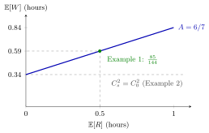

Preemptive-Outage Effective Service Time¶
Proposition¶
Consider the server-failure model: failures occur only during service, the service time between failures is exponential with rate , a failed job resumes after a repair, and the repair times are independent copies of with , independent of the net service time and of the failures. Let be the availability and . Then the effective service time satisfies
and hence
If the repair times are exponential, and this becomes (6.4.5)
Interpretation¶
Failures hit a queue twice: they stretch every job by the factor , which raises the load, and they make the effective service time more variable, which raises the waiting time at any given load.

The figure keeps the data of Example 1 ( per hour, deterministic hour, exponential repairs) and holds the availability at by choosing . Then and do not move, and grows linearly in the mean repair time, so hours. The grey line is the value obtained with , that is, ignoring the extra variability (Example 2); at (Example 1) the waiting time is hours. Same availability, longer repairs: longer queues.
The derivation conditions twice. Given and , has mean and variance . Given only, is Poisson with mean and variance , and Eve's law gives , while . A final application of Eve's law yields . The Poisson step needs the exponential time to fail; the factor in is what distinguishes this from the non-preemptive formulas, where the outage per job does not depend on .
Because the extra term is non-negative, failures never reduce the scv (TF 6.4.5). A common slip is to account for failures only through the load, keeping ; Example 2 shows how much that underestimates.
Key Results¶
- and , so the load is .
- (6.4.4), derived with Adam's and Eve's laws (Exercise 6.4.8).
- (Exercise 6.4.9); with exponential repairs (6.4.5, Exercise 6.4.10).
- With exponential repairs and fixed the extra term is proportional to : frequent short repairs are better for queueing than rare long ones (TF 6.4.2).
- The waiting time follows from Sakasegawa's formula with these and ; and are unchanged. For Poisson arrivals and one server this is the Pollaczek-Khinchine formula.
Examples¶
1. Sojourn time with failures (Exercise 6.4.6). Take per hour, deterministic hour (so ), hours () and exponential repairs with hour. Then , , , and
With and ,
2. Forgetting the variability. Using the inflated mean but keeping in Example 1 gives hours. The true value is times larger: the extra variability from the repairs accounts for hours of waiting.
3. Short frequent versus long rare repairs (TF 6.4.2). Failures at per hour with exponential repairs of mean hours, or per hour with mean hours, both give , so . For a net service time with, say, hour, the extra scv is for the first machine and for the second. The load is the same for both, so the second machine has the shorter queue.
Prerequisites¶
Related Concepts¶
- Server Adjustment
- Non-Preemptive Outage
- Pollaczek-Khinchine Formula
- Squared Coefficient of Variation
- Setup Effective Service Time
Sources¶
- Stochastic Operations Research · Week 7
- N. D. van Foreest, Sample Path Analysis and Simulation of Stochastic Systems, Section 6.4
Aliases: effective service time with failures, effective service time under server failures, service time with breakdowns, preemptive outage service time Keywords: \mathbb{E}[S] = \mathbb{E}[S_0]/A, \operatorname{Var}(S) = \operatorname{Var}(S_0)/A^2 + \lambda_f\mathbb{E}[R^2]\mathbb{E}[S_0], C_s^2 = C_0^2 + 2A(1-A)\mathbb{E}[R]/\mathbb{E}[S_0], C_0^2, availability, exponential repair times, Adam and Eve's rule Symbols: infinity, lambda, rho, sum
Last updated: 29 October 2026 20:42
Preemptive-Outage Effective Service TimeServer FailureAvailabilitySakasegawa's FormulaEve’s Law: Total VarianceServer AdjustmentNon-Preemptive OutagePollaczek-Khinchine FormulaSquared Coefficient of VariationSetup Effective Service Time